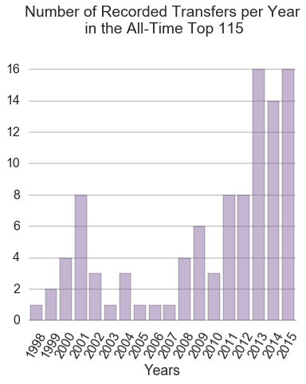
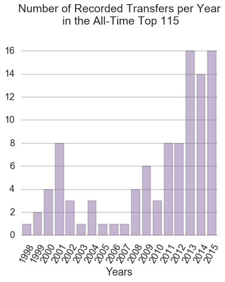

Future Impact Football Analytics
This project is maintained by Taylor Killian, Abhishek Malali and Virgile Audi
The primary motive of the project outlined below was designed to answer the following question: Can we evaulate and infer a player's value to his team based solely on the impact that they have on matches? In this respect, and to simplify our analysis, we define "impact" to mean the goals and assists provided for their team during various game states.
When football clubs do not perform equal to their, and their fans', expectations they look to infuse their team with more talented players, typically drawn from lower-tier or financially poor teams. The financial incentive for both teams in any transaction is clear, the buying team has hope that the new addition will put them over the top talent-wise to improve their standing in league competition while the selling team may look at the new funds as a way to prepare for the future and secure several new players to improve their team long-term.
Within the last 5 years, the economy of player transfers has undergone significant inflation where the top-tier clubs have shown a willingness to overpay for marginal talent or for players that may not be a good fit in their team. There is some notion that the transfer system is broken and is in need of revitalization. There are multiple ways to address the psychology of club executives and try to identify their motivations for spending money to procure new talent for their team. We refrain from any investigation into club finances but want to determine a method by which we can accurately and objectively place value on any player based on the impact that they have on the matches they play in.
Our primary motivation is to quantify the impact (based on goals scored, assists made and consistency of play) an individual player has on the games which he plays for his team. We intend to use this quantity for each player to infer their value (agnostic of team at first). With this calculated player impact value, we attempt to group and classify separate tiers of player impact with the goal of identifying what players have performed to the value placed on them in reality.
The player transfer market has seen ever increasing transfer amounts over the years. Ever increasing broadcasting deals have made the leagues richer which has reflected in the spending. We looked at the top 100 transfers in the last 20 years. The last five years alone account for 65 transfers in the top 100 list with the transfer record being shattered twice. This trend motivated us to investigate if the market was inflated and whether or not the players justified their value for the respective transfer amount. |

|
The data we use for our analysis is scraped is from World Football.net. World Football has match by match data in terms of the players who participated in the games as well as the goal scorers. The site had data for all the five leagues which we were interested in. The url links were not hard to deal with provided we had a list of teams which participated in a league for that year. An example url that we visited to acquire data can be viewed here. We scraped the goalscorers, players who assisted the goalscorer along with the time at which the goal was scored. We also recorded whether the goal scorer or assist maker were substituted. We scraped the data from the top 5 European leagues (British, Spanish, German, Italian and French) for the complete 2012-13 and 2013-14 seasons. Overall we scraped 760 pages for each league which totaled ~3800 webpages.
The transfer values were scraped from the Wikipedia page for transfers for each league for each season we considered. The French and the German league did not have transfer values mentioned for the seasons under consideration. The Spanish league did not have transfer data available for the summer of 2014. An example of the data which we had to scrape can be viewed here.
We wanted to visualize where the big money transfers were happening. The plot below was built in D3 for specifically that purpose. It was see the emphasis of the price of the player on different emtrics like goals, assists and the metric score generated by us. This could also help find groupings of players who were available in the similar price range while providing the same attacking punch in terms of goals.
Relevant details about the metric.
As football enthusiasts a key question we wanted to address was to find the players which are valued similarly, as per our metric. This would be meaningless if it was done only using goals and assists since those numbers can distract from a player's true impact on his team. Hence we used the entirety of the data including the unwrapped contribution time series. This would cluster players who contribute similarly in the games as well over the seasons.
We found clusters of similarly influential players for both seasons. An interesting way of looking at long-term performance would be finding players who move between clusters over seasons. This can indicate a player's improvement or decline in performance from season to season. With enough data and multiple seasons, we would then be able to track a players trajectory and possibly predict their future performance.
An interesting note to make here would be that Messi is classified with Robin van Persie who had fewer goals and assists. He was, however, equally influential in helping his team to the British Premier League title. These were the kind of clusters and observations we were hoping we would see when we processed and analyzed our data.
Using traditional statistics, we look at the best players in terms of goals and assists. The first plot show the best players for the season of 2012-13. The top players were names you would have heard of even if you aren't as ardent a soccer fan as our team.

We evaluate the top players for the season of 2012-13 using the metric which we have defined. Our list of top 20 players is very similar to the list we generated using traditional statistics. But in effect there are a few names we might come across as anomalies like Stephan Kiessling. This shows the intent of our metric, where credit is given to players who are contribute to their teams success but are easily overlooked when only looking at their absolute statistics. This demonstrates the utility of valuing players based on the impact they have on the outcome of a match.

We chart the ranking according to our metric compared to the ranking with traditional statistics. The 45 degree line is plotted for reference. We see that certain players who were ranked highly as per the goals + assist metric did fall down the ranking ladder when the metric changed. The metric does not affect the top players since we see a close grouping near the origin. But as we go down the ranking ladder we see significant jumps. We find lots of players who weren't ranked well now within the top 50. This directly states that we are doing a decent job of finding underrated players who contribute immensely but are not noticed.
For the two most globally recognisable players, Lionel Messi and Cristiano Ronaldo we see how their scores evolve over the season in the plot below. Consistent performance over the course of the season is the most desirable trend among succesful forwards.
As is shown in the time series above, Messi consistently outperformed Ronaldo in almost every game for the 2012-13 season. The contribution was recognized and rewarded as Messi was named the FIFA World Player of the Year following the 2012 season.
We were keen on analyzing these time series for some interesting players for a season. But complexity of analyzing every set of players visually and making key discoveries was cumbersome.
To check consistency of our metric against what actually happened in the seasons we evaluated, we combine the scores for each player in a team. We then rank each team in the league by their aggregate score and compare this ranking to the actual place the team finished the season. As the figure shows below, the rankings predicted by our measure were not far from the actual results and showed correlations no worse than 0.73.
The leagues that our metric most accurately predicted, when aggregated by team, were the Spanish (corr = 0.92) and French (corr = 0.88) leagues. Traditionally these leagues are known for allowing for more goals and since our metric, at present, is solely based on scoring statistics it is clear these successes are understandable. The British, German and Italian leagues are more measured defensively and it is inferred that the less accurate prediction of these leagues is due to not accounting for defensive statistics.
In order to further validate our metric of player impact we trained two separate regressions, trained on the data from the 2012-13 season and tested on the 2013-14 season.Initially, we trained a random forest regressor and then utilized an ordinary linear regression.

Once we trained our regressions we wanted to get a sense of the influence each feature, derived from our metric, had on our prediction model. We see that the importance of the 'ngoals' and 'nassists' (the number of goals and assists respectively) far outweigh the others as would be expected. It is satisfying to see that the other features describing different aspects of the goal are also nontrivial and contribute to the final prediction model. With the assurance that our model was utilizing the extracted features from our data correctly we move on to actually predicting the performance of players, based on our metric, in the following season.
|
Random Forest |
Linear Regression |
|---|---|

|
We use a linear regressor to predict and we find a very high accuracy for both the seasons.
Add extra comments.
Fill in relevant details